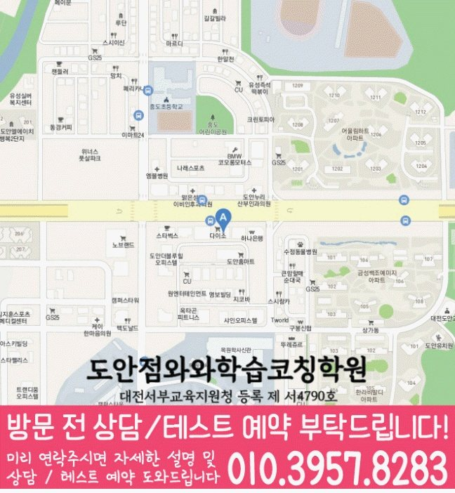

30초 핵심 안내
도안신도시 고등 영수학원 선택 전 확인할 기준
대전 서구 도안신도시 고등 영수학원 페이지는 고2 학생의 영어·수학 취약점 진단과 주간 학습 설계를 설명합니다. 위치 정보는 대전 서구 동서대로 692 에프엠프라임 1차 501이며, 입시설계 확인 기준과 학교 시험 준비, 학부모 상담 체크사항을 포함합니다. 성적이나 입시 결과를 보장하지 않고 점검 가능한 학습 과정을 중심으로 도안신도시 페이지에서 안내합니다.
High School English & Math
도안신도시 고등 영수학원 페이지에서 고2 영어·수학 학습 우선순위, 시험 대비, 질문·과제·오답 피드백, 입시설계 상담 기준을 살펴봅니다. 지역은 대전 서구 도안신도시, 안내 주소는 대전 서구 동서대로 692 에프엠프라임 1차 501입니다.
30초 핵심 안내
대전 서구 도안신도시 고등 영수학원 페이지는 고2 학생의 영어·수학 취약점 진단과 주간 학습 설계를 설명합니다. 위치 정보는 대전 서구 동서대로 692 에프엠프라임 1차 501이며, 입시설계 확인 기준과 학교 시험 준비, 학부모 상담 체크사항을 포함합니다. 성적이나 입시 결과를 보장하지 않고 점검 가능한 학습 과정을 중심으로 도안신도시 페이지에서 안내합니다.
수업 안내 이미지

센터 위치 안내

도안신도시 고등 영수학원을 알아보는 대전 서구 도안신도시 가정이라면 결론은 분명합니다. 고2 학생에게 필요한 것은 영어의 어휘·구문·독해 문제와 수학의 개념·유형·오답 문제를 구분해 진단하고, 학교 일정에 맞춰 복습 주기를 만드는 도안신도시 학생에게 필요한 수업입니다. 이 글은 영어 교과서 본문은 익숙하지만 변형 문항에서 흔들리는 상황, 수학 공식을 외우지만 적용 조건을 구분하지 못하는 상황, 그리고 어려운 과제를 뒤로 미루고 쉬운 항목부터 반복하는 생활 패턴을 가진 학생을 기준으로 입시설계 확인법까지 바로 답합니다.
도안신도시 고등 영수학원 선택에서 먼저 확인할 것은 학생이 실제로 다닐 수 있는 위치와 수업 대상입니다. 제공된 정보는 대전 서구 동서대로 692 에프엠프라임 1차 501, 영어·수학 공통 가능 학년 고1·고2·고3이며, 최종 시간표는 상담에서 다시 맞춥니다.
도안신도시의 제공 학교 참고 목록은 유성고·도안고·서대전여고입니다. 학교 이름을 반복해 홍보하기보다 현재 범위와 학생의 풀이 기록을 함께 확인해야 과목별 학습 순서를 현실적으로 정할 수 있습니다.
와와학습코칭센터 도안점에 대해 제공된 등록 자료는 대전서부교육지원청 등록 제 서4790호입니다. 도안신도시 학생의 영어·수학 계획은 이 기본 정보에 더해 최근 시험지와 오답 기록을 확인한 뒤 구체화합니다.
도안신도시에서 고등학생 학원을 찾는 가정은 수업 횟수만 보지 않고 학교 수업 종료 후 등원, 귀가, 저녁 복습까지 하루의 흐름을 함께 계산해야 합니다. 대전 서구 도안신도시 안에서도 학생마다 학교 일정과 이동 방식이 다르므로, 도안신도시 고등 영수학원 상담 전에 실제 평일 시간표를 적어 가는 것이 좋습니다. 과목별 성적 편차가 커진 뒤라면 새 수업을 추가하기 전에 기존 영어 단어 복습과 수학 오답 시간이 얼마나 남는지 확인하고, 무리한 날에는 최소 학습량을 어떻게 유지할지도 도안신도시 학생과 함께 정해야 합니다.
도안신도시 고등 영수학원에 어울리는 학생을 판단하는 질문은 “몇 등급인가” 하나가 아닙니다. 도안신도시의 사례 학생은 고2이며 영어 교과서 본문은 익숙하지만 변형 문항에서 흔들리는 모습, 수학 공식을 외우지만 적용 조건을 구분하지 못하는 모습, 그리고 어려운 과제를 뒤로 미루고 쉬운 항목부터 반복하는 습관을 갖고 있습니다. 이런 유형은 맞은 문제라도 설명이 흔들리는지, 오답을 며칠 뒤 다시 풀 수 있는지, 계획 미완료 이유를 말할 수 있는지를 도안신도시 상담에서 확인해야 합니다. 고2 단계는 과목 난도가 높아지는 가운데 학교 시험과 장기적인 수능 기반을 함께 관리할 시기이므로 “교재 권수보다 완료율과 재현 가능성을 관리하기”라는 목표를 작은 단위로 시작하는 방식이 도안신도시 학생에게 현실적입니다.
대전 서구 도안신도시 학부모가 도안신도시 고등 영수학원의 영어 수업을 볼 때는 교재 난도보다 피드백의 구체성을 확인해야 합니다. 이번 고2 학생처럼 영어 교과서 본문은 익숙하지만 변형 문항에서 흔들리는 경우라면 “독해가 약하다”는 설명으로 끝내지 않고 어느 문장, 어느 연결어, 어느 선택지에서 판단이 무너졌는지 도안신도시 학생의 기록표에 남겨야 합니다. 도안신도시의 주간 루틴은 짧은 어휘 반복, 구문 설명, 제한 시간 독해, 학교 자료 회상을 순환시키고, 다음 수업 전에 학생이 한 가지 오답 원인을 스스로 말하도록 구성하는 편이 좋습니다.
도안신도시의 수학 학습에서 선행과 복습 중 무엇이 먼저인지는 학생 유형에 따라 달라집니다. 수학 공식을 외우지만 적용 조건을 구분하지 못하는 학생이라면 도안신도시 고등 영수학원에서 새 단원을 빠르게 나가기보다 이전 단원의 핵심 문제를 답지 없이 재현하는 시간을 확보해야 합니다. 한 문제를 오래 붙잡을 때는 멈출 시점과 질문할 내용을 정하고, 맞힌 문제도 풀이가 지나치게 우연적이지 않았는지 도안신도시 수학 관리에서 점검해야 합니다. 수학 오답은 정답 노트가 아니라 도안신도시 학생의 다음 행동에 활용되는 자료가 되어야 합니다.
도안신도시 페이지에 제공된 수업 학교 정보에는 “유성고”, “도안고”가 기재되어 있습니다. 도안신도시 고등 영수학원의 내신 상담에서는 학교 이름만 말하는 데서 끝내지 않고 현재 사용하는 교과서, 부교재, 프린트, 최근 시험지, 수행평가 일정을 함께 전달해야 합니다. 도안신도시 고등학생의 영어는 학교 범위 회상과 변형 문항을, 수학은 단원별 기본·서술형·시간 제한 문제를 구분해 준비하는 편이 좋습니다. 시험 후에는 맞은 문항도 우연히 풀었는지 확인해 다음 도안신도시 학습 계획에 반영해야 합니다.
입시설계를 검색할 때 도안신도시 학부모가 가장 먼저 볼 기준은 합격 가능성을 단정하는 말보다 현재 교과 성취, 모의고사, 활동 일정과 지원 조건을 구분해 보는 것입니다. 도안신도시 고등 영수학원 상담에서는 “상담 뒤 학생이 실행할 과제와 확인 날짜가 남는지”, “지원 방향과 교과 학습 계획이 서로 충돌하지 않는지”를 질문으로 적어 두면 설명을 비교하기 쉬워집니다. 입시설계라는 표현 자체보다 실제 운영 근거를 확인해야 하며, 입시 결과나 합격을 보장하는 표현보다 근거, 조건, 대안이 함께 제시되는지를 기준으로 삼아야 합니다.
Information Basis
이 페이지는 제공된 센터 정보와 지역별 원고를 바탕으로 작성했으며, 제공되지 않은 학교명이나 생활권 정보는 임의로 추가하지 않았습니다.
FAQ
도안신도시에서 영어 교과서 본문은 익숙하지만 변형 문항에서 흔들리는 학생과 수학 공식을 외우지만 적용 조건을 구분하지 못하는 학생처럼 과목별 원인이 다른 경우, 영어와 수학을 따로 진단하고 주간 계획에서 연결하는 방식이 필요합니다. 도안신도시 고등 영수학원이 적합한지는 반 이름보다 진단 근거, 질문 시간, 오답 재풀이, 과제 조정 기록으로 판단하는 편이 좋습니다.
대전 서구 도안신도시 고등 영수학원 상담에서는 영어에 필요한 짧은 반복과 수학에 필요한 긴 집중 시간을 다르게 배정해야 합니다. 두 과목 모두 완료율·정확도·오답 원인·다음 점검일을 남기되, 분량까지 똑같이 맞추지 않는 것이 도안신도시 학생 관리의 핵심입니다.
도안신도시 학생의 최근 시험지, 현재 교과서와 부교재, 학교 프린트, 수행평가 일정, 일주일 시간표를 준비하는 것이 좋습니다. 대전 서구 도안신도시 상담에서는 영어 서술형 감점과 수학 풀이형 감점을 따로 확인하고, 시험 범위 공지 전후의 계획이 어떻게 달라지는지 물어보십시오.
입시설계에 대해서는 상담 뒤 학생이 실행할 과제와 확인 날짜가 남는지를 먼저 묻고, 답변이 학생의 실제 수업과 기록에 어떻게 적용되는지 확인해야 합니다. 도안신도시 고등 영수학원의 설명이 모호하면 적용 조건, 담당자, 점검 시점, 변경 절차를 다시 질문해 같은 기준으로 비교하는 편이 좋습니다.
대전 서구 도안신도시 지역 안내에 적힌 주소는 대전 서구 동서대로 692 에프엠프라임 1차 501입니다. 도안신도시에서 이동 가능한 요일과 시간을 실제 생활표에 넣어 본 뒤, 운영 시간, 수강료, 반 정원, 교재비, 결석·보강 기준처럼 변동 가능한 정보는 방문 전 별도로 확인하십시오.
Parent Perspective
※ 이 문안은 대전 서구 도안신도시 학부모의 선택 기준을 표현한 예시 후기이며, 실제 후기나 성과 보장을 뜻하지 않습니다.
고2 아이가 어려운 과제를 뒤로 미루고 쉬운 항목부터 반복하는 편이라 걱정했는데, 상담에서는 공부 시간을 무작정 늘리기보다 영어와 수학의 원인을 분리해 보자고 안내하는 형식이 좋았습니다. 도안신도시 고등 영수학원을 검토하면서 첫 목표와 다음 점검일을 적어 두었고, 입시설계 관련 내용도 구체적인 질문으로 바꿔 확인할 수 있었습니다.